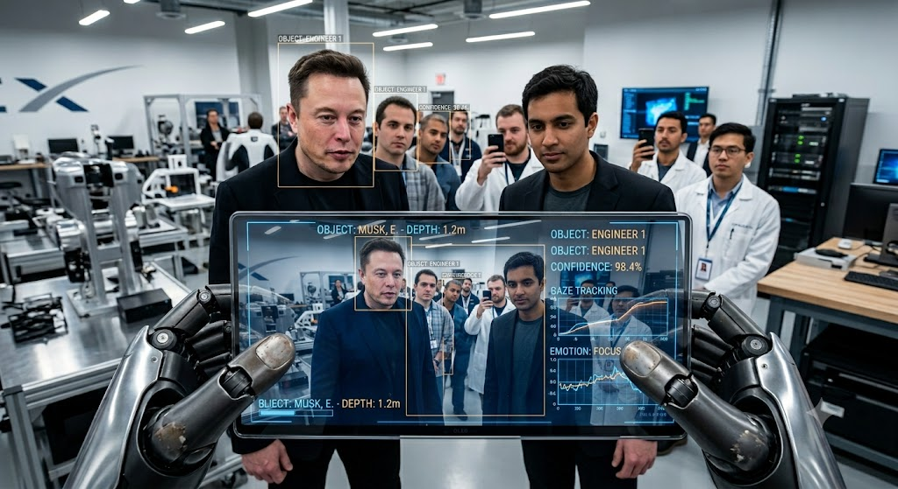

Deep learning and computer vision form the backbone of autonomous perception in robotics. Computer vision algorithms extract and process visual data from the environment, while deep learning models, particularly convolution neural networks, analyze complex patterns to enable object recognition, motion prediction, and scene understanding. This synergy allows robots to interpret dynamic environments, make context-aware decisions, and execute tasks with precision—ranging from navigating cluttered spaces to interacting safely with humans and handling objects in real time.
